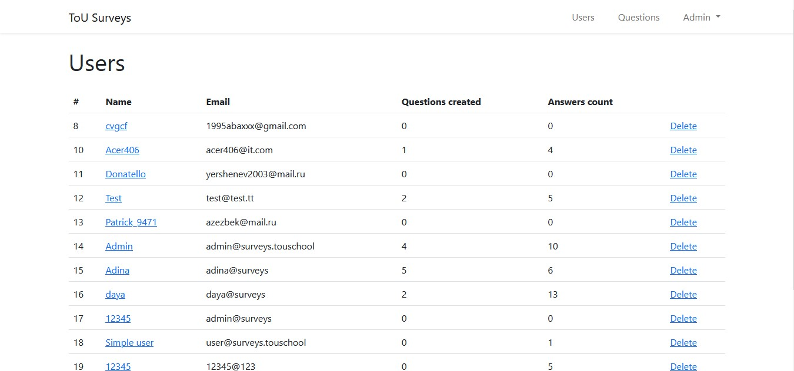
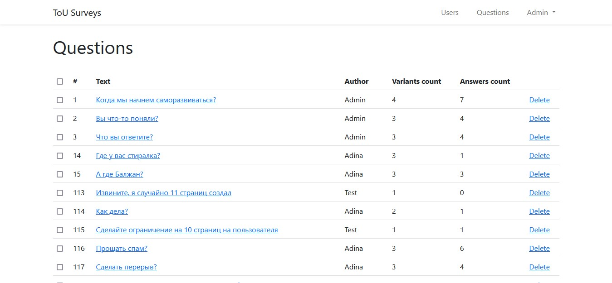
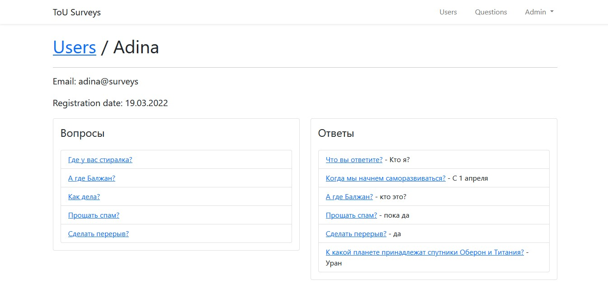

Laravel Surveys API ⚙

Авторизация в приложении
Для работы с API нужен api_token, его получаем через запрос на авторизацию
Получение списка опросов
Авторизованный пользователь попадает на главную.
С сервера загружаются последние опросы, если их много, то пагинация.


Ответ на опрос
Вопросы имеют формат единственного выбора.
Пользователь может изменить свой ответ при желании.
Получение результатов
Только после отправки ответа пользователь сможет увидеть результаты опроса.
С сервера загружаются данные о количестве ответивших и первые 3 имени отобразятся.


Создание нового опроса
Также есть возможность создать свой опрос.
Пользователь вводит текст вопроса и варианты ответов, после чего данные отправляются на сервер.